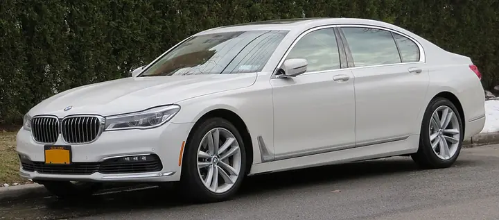
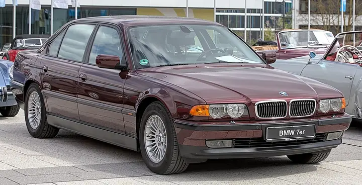
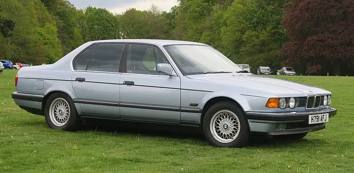
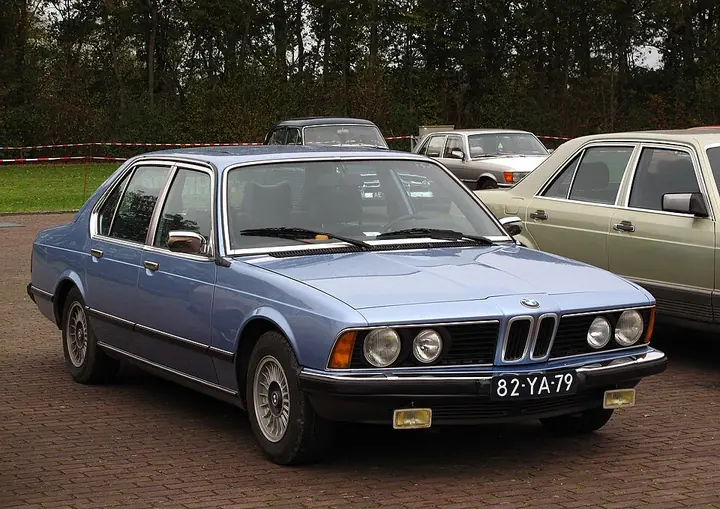

BMW 7 Series
Seventh generation (G70/G73; 2022) · 2022–present
Abstract
This generation of the BMW 7 Series is a full-size luxury car (F), built July 2022 – present in Germany: Dingolfing (Dingolfing Plant), Thailand: Rayong (BMW Thailand), Malaysia: Kulim (Inokom) and other plants. Body styles: 4-door sedan. Layout: Front-engine, rear-wheel-drive. Designed by Jozef Kabaň, Domagoj Đukec, Sebastian Simm (exterior), Henri von Freyberg (interior). This generation has its own article: BMW 7 Series (G70).

_750e_IMG_9358.jpg){kind=link}
1Specifications
| Production | July 2022 – present |
|---|---|
| Model years | 2023–present |
| Assembly | Germany: Dingolfing (Dingolfing Plant)Thailand: Rayong (BMW Thailand)Malaysia: Kulim (Inokom)Indonesia: Jakarta (Gaya Motor) |
| Designer | Jozef Kabaň, Domagoj Đukec, Sebastian Simm (exterior)Henri von Freyberg (interior) |
| Class | Full-size luxury car (F) |
| Body style | 4-door sedan |
| Layout | Front-engine, rear-wheel-driveFront-engine, all-wheel-drive (xDrive)Rear-motor, rear-wheel-drive (i7 eDrive50)Dual-motor, all-wheel-drive (i7 xDrive60, M70) |
| Platform | Cluster Architecture (CLAR) (CLAR-II/WE) |
| Engine | Petrol mild hybrid:3.0 L B58 turbo I64.4 L S68 twin-turbo V8Petrol plug-in hybrid:3.0 L B58 turbo I6Diesel mild hybrid:3.0 L B57 turbo I6 |
| Transmission | 8-speed ZF 8HP automaticSingle-speed (i7) |
| Battery | 20 Ah lithium-ion (mild hybrid)18.7 kWh lithium-ion (plug-in hybrid)105.7 (101.7 usable) kWh lithium-ion (i7)118.1 (112.5 usable) kWh Cylindrical cell Li-NMC (i7 LCI) |
| Electric range | 488-625 km (WLTP, i7)566-728 km (WLTP, i7 LCI) |
| Charging | 7.4 kW (AC, PHEV)Three-phase 11 kW / 22 kW (AC, i7)195 kW (DC, i7) |
| Wheelbase | 3215 mm |
| Length | 5391 mm |
| Width | 1950 mm |
| Height | 1544 mm |
| Weight | 2075-2270 kg2595-2770 kg (i7) |
| Also called | BMW i7 (electric) |
| Related | BMW X7 (G07)BMW 5 Series (G60)BMW iX |
| Predecessor | BMW 7 Series (G11) |
2Driver assistance
- Personal Pilot L3 and Highway Assistant (SAE Level 3, optional, G70): Personal Pilot L3 drives in slow traffic up to 60 km/h on German motorways with separated carriageways, hands off and eyes off. Highway Assistant (Level 2) keeps speed, distance and lane up to 130 km/h hands off, and can change lane when the driver confirms by looking at the mirror. Source: BMW Group PressClub: Level 2 and Level 3 combined.
3Versions
- Presentation
- Facelift
- BMW i7
- BMW 7 First Edition
- BMW 7 Protection (G73)
4Previous generations

_front_3.23.18.jpg){kind=link}

_1X7A0278.jpg){kind=link}

_registered_August_1990_2986cc.jpg){kind=link}

_(52830035314).jpg){kind=link}
5Generation by generation
Length +11% from the first to the last
E23 19774,860 mm
E32 19864,910 mm
E38 19944,985 mm
E65 20015,029 mm
F01 20085,072 mm
G11 20155,098 mm
G70 20225,391 mm
Weight +41% from the first to the last
E23 19771,470 kg
E32 19861,720 kg
E38 19941,710 kg
E65 20011,710 kg
F01 20081,955 kg
G11 20151,755 kg
G70 20222,075 kg